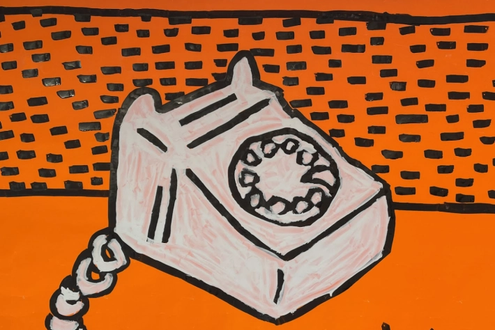

Banksy Exhibition
Laugh Now
learn more

A unique collection of over 100 modern, contemporary, digital and immersive works of art!
Get TicketsArt for Everyone

6M+ Visitors Globally

Unique Immersive Collection

Rated 4.5/5 ⭐️


Approximately 60 minutes.
Honthorststraat 20, Amsterdam (Museum Square). Get directions via this link.
Are you traveling by car in Amsterdam? Find a parking space at Q-Park Museumplein.
Do you have a question? Click hereto chat with us (available Monday-Friday from 10:00 – 16:00) or email us at amsterdam@mocomuseum.com.
For all other inquiries see here.
Don’t forget to bring your headphones to access the free audio tour.
6M+ visitors worldwide
The Moco Museum is one of our favorite places to visit in Amsterdam! It’s smaller than some of the big museums in the city, which actually makes it perfect for a quick and enjoyable visit without feeling rushed. The space is beautifully designed with so many cute and creative photo spots. We also loved how interactive the exhibits are. What stood out most to me were the meaningful quotes and inspiring messages throughout the museum. I left feeling so motivated and uplifted. Definitely a must-visit for art lovers and anyone looking for a fun, modern museum experience in Amsterdam!
Situated near all the major museums in Amsterdam, Moco Museum is a cozy yet inspiring spot filled with contemporary & street art. You can explore at your own pace across a few floors, with works by icons like Yayoi Kusama, Banksy, and more. Some immersive pieces are hidden throughout too! Don’t miss the outdoor garden, it’s full of art as well. 🎨🖼️✨
A vibrant pop & street art gem in the heart of Amsterdam! From iconic Banksy pieces to bold works by Warhol and Haring, every corner bursts with color and creativity. The museum is compact but packed with energy, immersive exhibits, and Instagram-ready moments. Even with a crowd, it’s easy to feel inspired and engaged—definitely worth a visit for anyone who loves modern art, street art, or just a visually striking experience.
Moco Museum is one of those places that instantly sparks your creativity 🎨💭 From the moment you walk in, every corner feels like a piece of art — colorful, modern and full of meaning. It’s not your typical museum… it’s more like stepping into a visual dream. The lights, the mirrors, the pop art. Whether you go on a date, with friends or solo, it’s one of those experiences that leaves you inspired and with the prettiest photos 💕. A must if you’re in Amsterdam
"Nice modern museum and Moco Amsterdam is the second Moco we visited after the one in Barcelona. I recommend it, and our kids loved the modern / contemporary art more than the classic style museums. In Amsterdam especially good on a rainy day when you can escape to a museum."
Today’s visit to the Moco Museum in Amsterdam was a highlight of our trip. Housed in a beautiful townhouse just off Museumplein, Moco manages to blend history and rebellion, elegance and disruption, all under one quirky roof. The Banksy collection is every bit as impactful in person as you would expect - sharp, irreverent, and full of hidden (and not-so-hidden) messages. Alongside Banksy, we explored works by Keith Haring, Basquiat, Warhol and other visionary artists who challenge the status quo with colour, energy, and wit.
I recently visited the Moco Museum in Amsterdam and had a fantastic experience! The museum features an impressive collection of modern and contemporary art, including some iconic works by Banksy - definitely a highlight for me. The pieces were thought-provoking and well-curated, making the visit truly memorable. If you're into street art, pop art, or just want to see some bold, creative works (like Banksy’s), Moco Museum is a must-visit in Amsterdam. Highly recommend!
Laugh Now
learn more
Meet the Icons of Modern Art
learn more
Studio Irma
learn more